01CNC mill
I loaded four tools (end mill, drill, spot drill, and ball end mill), set work and tool offsets with an edge finder, and ran the program to cut a 3 × 3 in metal part. Asked how I'd make 100 of them, I'd cut several parts from one larger plate to avoid re-homing for each piece, which is where most of the time went.
02CNC lathe
I turned an aluminum ring with 1-12 UNF external threads from 1 in bar stock. The width and outside dimension came out on target (0.50 in wide, 0.48 in outside radius). The bore measured 0.31 in instead of 0.35 in, because a lip formed during cutting, and the edges needed deburring. For production, I'd thread and bore the whole bar first and then part off, and add a catch basin so finished parts don't fall into the machine.
033D printing tensile study
Our team printed six dogbone specimens on a Bambu P1P while varying layer height and infill, then pulled them to failure on an Instron. The specimens failed between 0.50 and 0.60 kN (about 26 to 31 MPa ultimate tensile strength), and the results showed how print settings trade strength against print time.
04Engine teardown (DFM/DFA)
Our team disassembled a four-stroke engine, studied how each part was made and assembled, and rebuilt it with timing marks aligned and valves clearing the piston. Bagging each subassembly's bolts separately made the rebuild much faster. The throttle linkage was the hardest part to refit, which became one of our design-for-assembly suggestions.
05Gallery
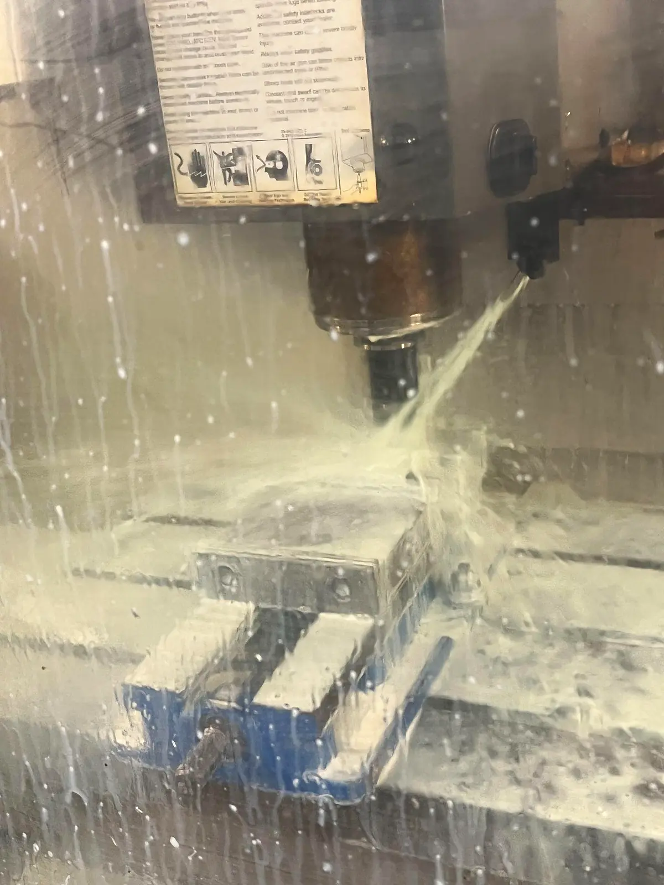
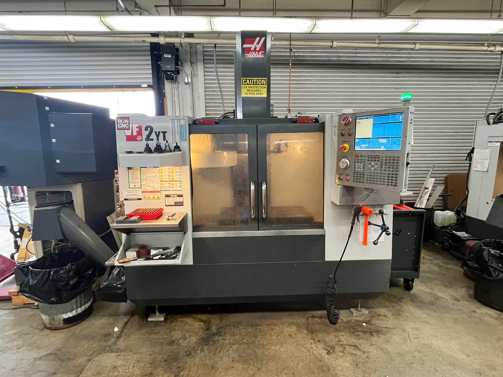
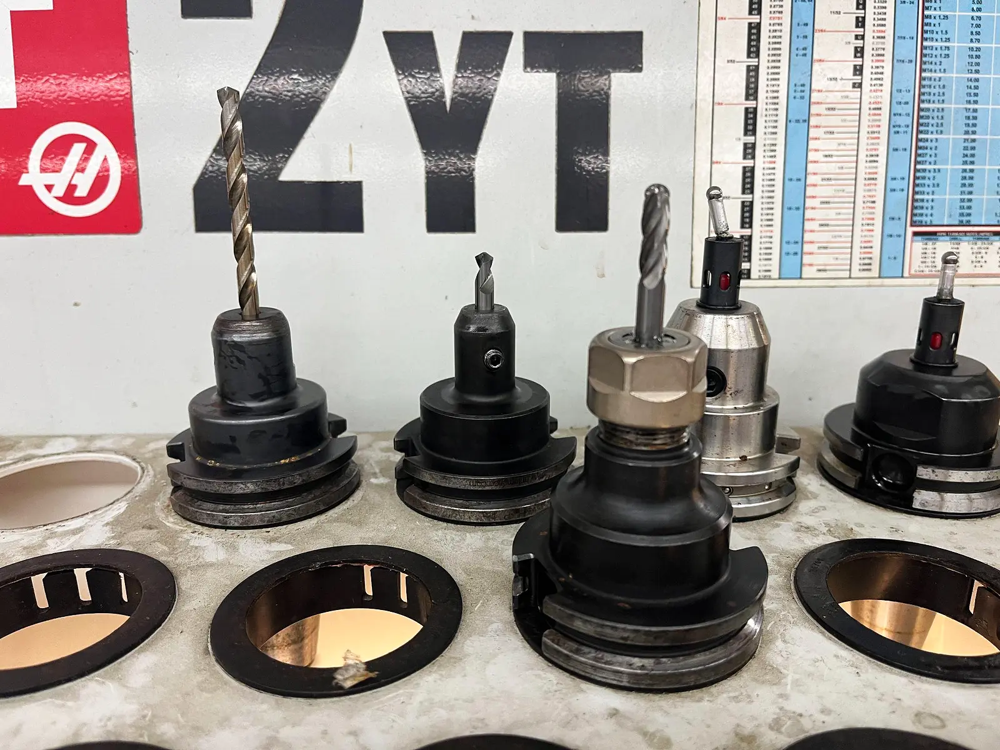
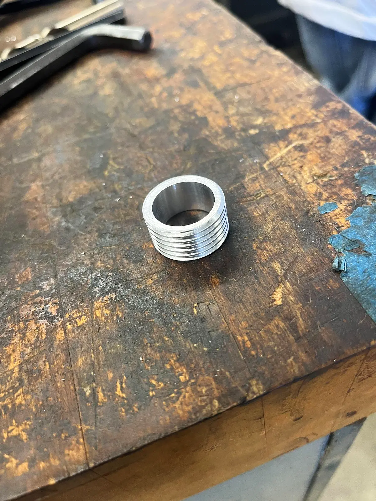
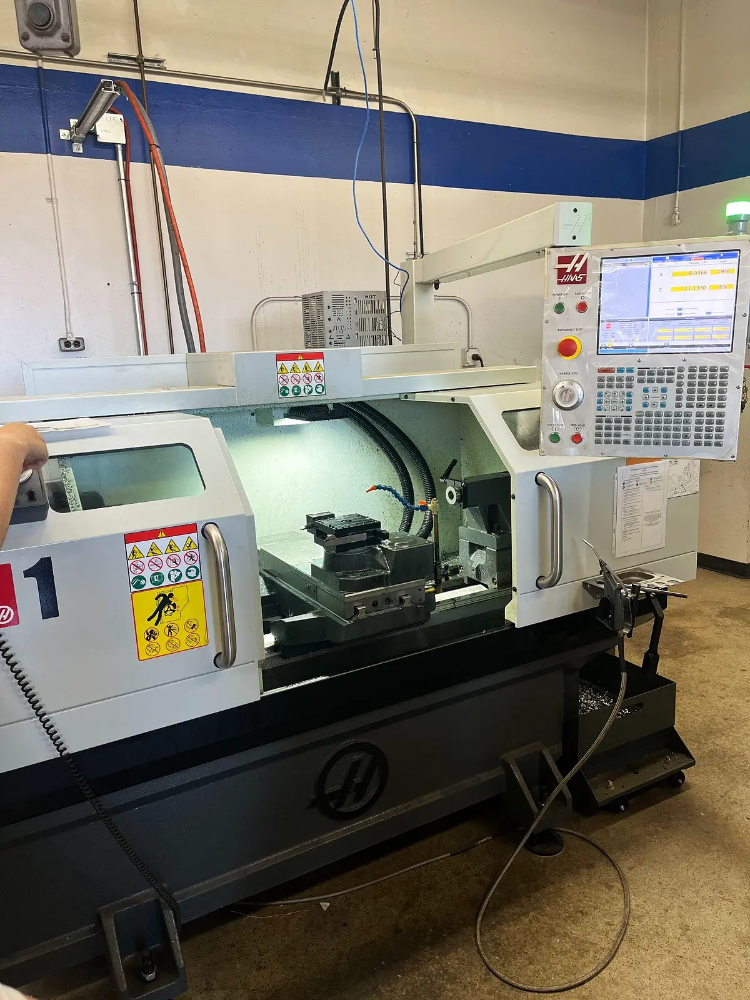
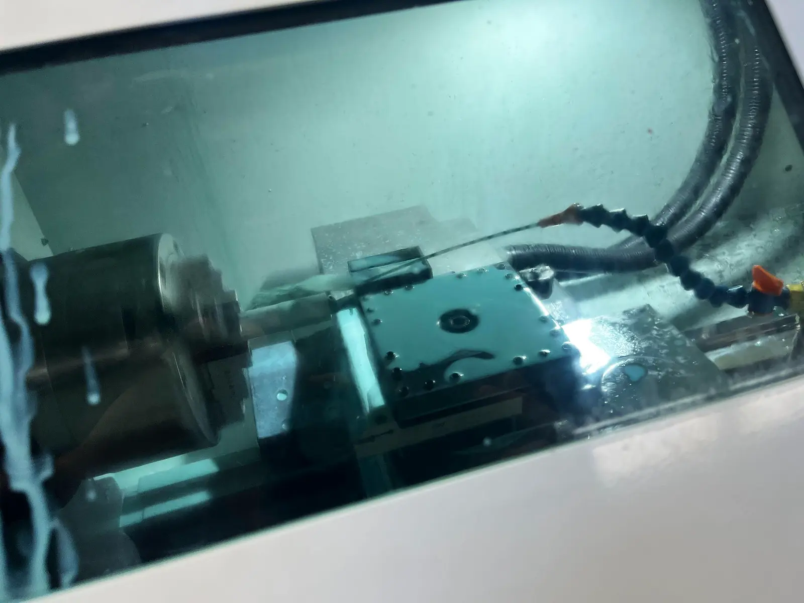
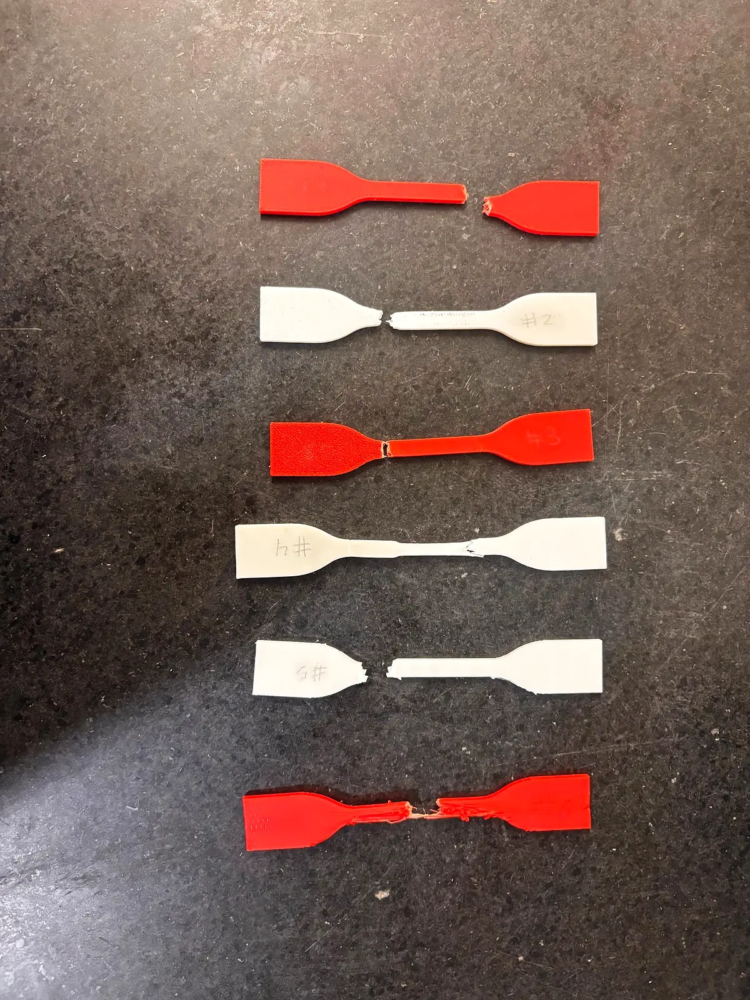
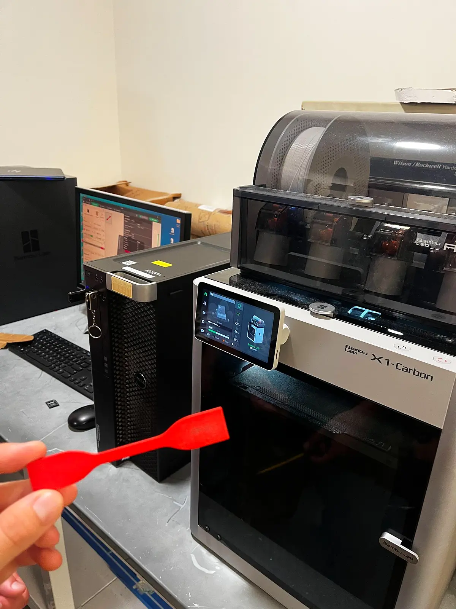
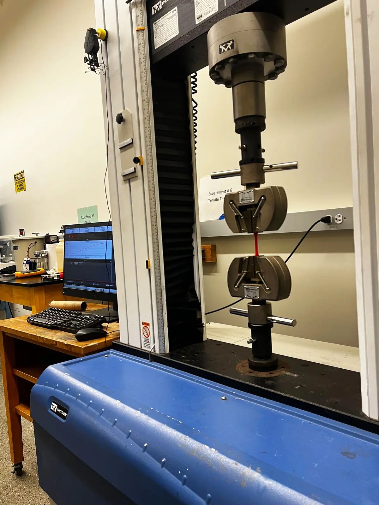
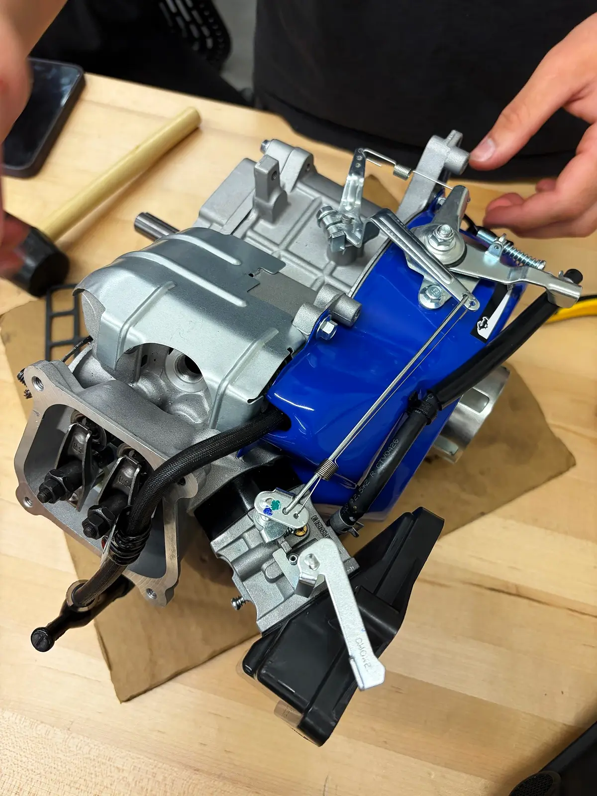
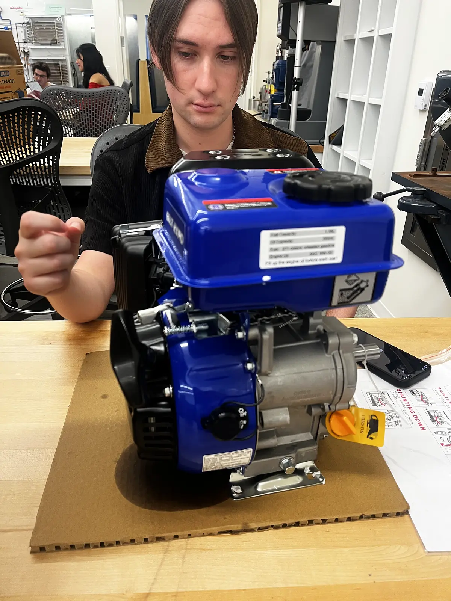
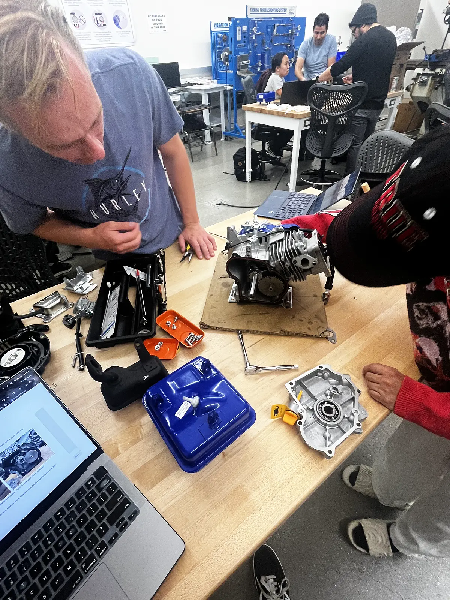
Click any image to enlarge. Technical drawings are shown in an inverted blueprint style.